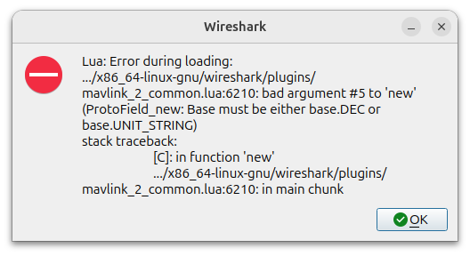
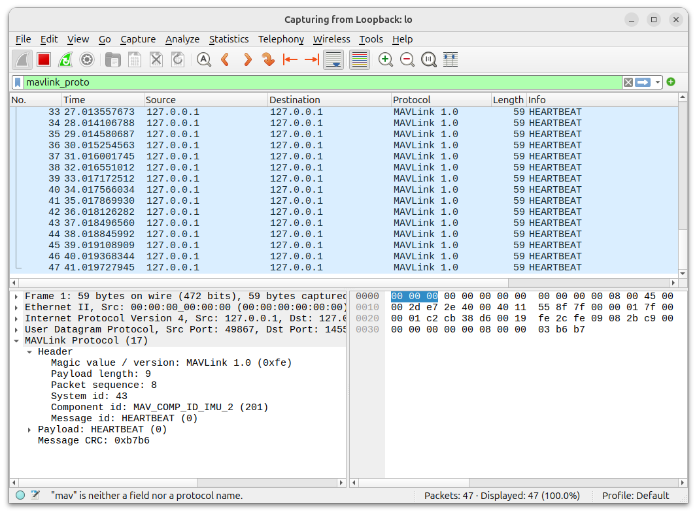

Mavlink network tools
Wireshark
Add mavlink parser to wireshark as LUA plugin read more
Create lua plugin
| .venv/bin/mavgen.py \
--lang=WLua \
--wire-protocol=2.0 \
--output=mavlink_2_common \
.venv/lib/python3.11/site-packages/pymavlink/dialects/v20/common.xml
|
Install the plugin
TODO: run wireshark with user permission, install the lua plugin in user .local folder
| sudo cp mavlink_2_common.lua /usr/lib/x86_64-linux-gnu/wireshark/plugins
|

| line to fix |
|---|
| f.CAMERA_IMAGE_CAPTURED_capture_result = ProtoField.new("capture_result (MAV_BOOL)", "mavlink_proto.CAMERA_IMAGE_CAPTURED_capture_result", ftypes.INT8, nil, base.DEC)
|

Capture mavlink traffic

Play mavlink pcap files
tcpreplay
I try this tool without success
| sudo apt install tcpreplay
|
| sudo tcpreplay -i eth0 capture.pcap
|
Play pcap using scapy script
| from scapy.all import rdpcap, IP, UDP, send
import time
PCAP = "mavlink.pcap"
pkts = rdpcap(PCAP)
t0 = None
start = None
for p in pkts:
if IP in p and UDP in p:
if t0 is None:
t0 = float(p.time)
start = time.time()
pkt_time = float(p.time)
delay = (pkt_time - t0) - (time.time() - start)
if delay > 0:
time.sleep(delay)
del p[IP].len
del p[IP].chksum
del p[UDP].len
del p[UDP].chksum
send(p[IP], verbose=False)
|